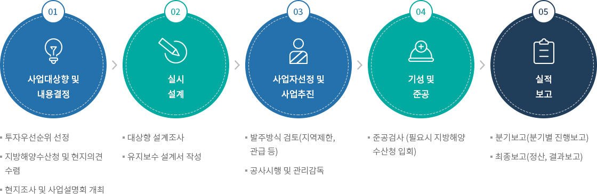
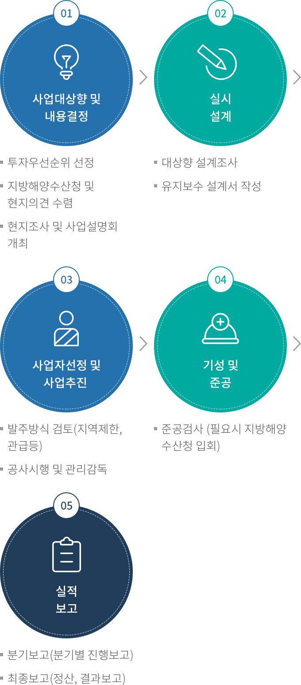

어항 유지보수
- 홈
- 사업소개
- 쾌적한 어항
- 어항 유지보수
추진계획
안전시설물 설치·보수 확대 및 손상된 기본시설물 긴급보수
- 안전시설(안전난간 등) 신규설치·손괴보수
- 손상된 방파제, 물양장, 선착장 등 기본시설물 긴급보수
국민어항을 위한 안전시설 및 홍보 강화
- 악천후시 자동으로 작동 가능한 기능 향상 가로등 유지보수
- 기능유지를 위한 권역별 계선주 일제 정비(남·서해권역)
- 물양장 내 구명사다리설치
- 국가어항 종합안내표지판 설치로 어항 정보제공 및 홍보 효과 제고
- 국가어항 알림 이정표 설치로 어항 이용자의 유입 효율성 향상
어항 사용자를 위한 기본시설의 재생
- 방풍벽(정온도 확보) 설치 및 어선전용 방충재 설치
- 부잔교 정기적인 보수 및 개량보수
- 물양장 계단 및 법면부 보호를 위한 고무 계단 보호공 설치
깨끗하고 쾌적한 어항 조성
- 관리청과 협의를 통해 쓰레기 집하장 및 관리 CCTV 설치
추진체계


-
01. 사업대상향 및 내용결정
- 투자우선순위 선정
- 지방해양수산청 및 현지의견 수렴
- 현지조사 및 사업설명회 개최
-
02.실시 설계
- 대상향 설계조사
- 유지보수 설계서 작성
-
03. 사업자선정 및 사업추진
- 발주방식 검토(지역제한, 관급 등)
- 공사시행 및 관리감독
-
04. 기성 및 준공
- 공사시행 및 관리감독
-
05. 실적 보고
- 분기보고(분기별 진행보고)
- 최종보고(정산, 결과보고)